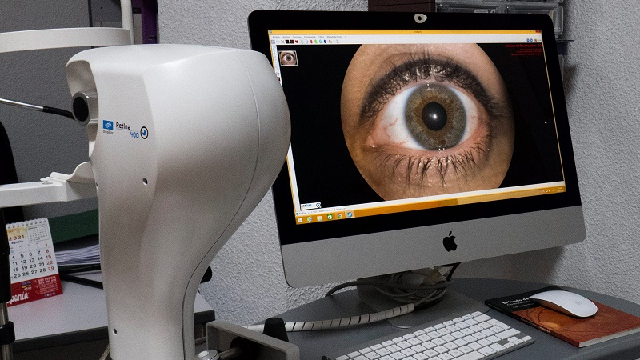
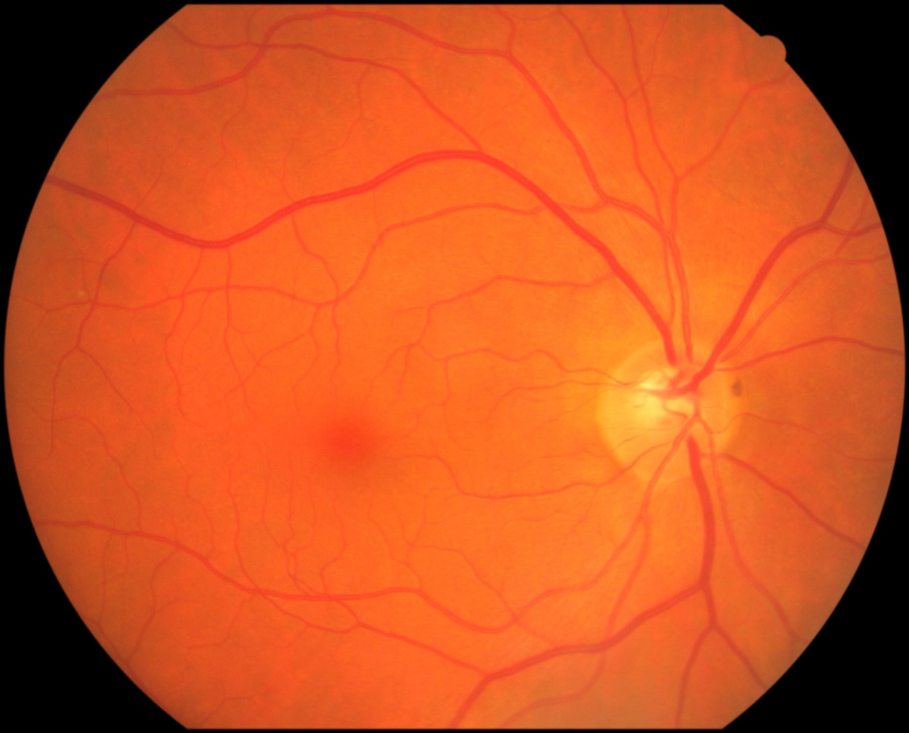
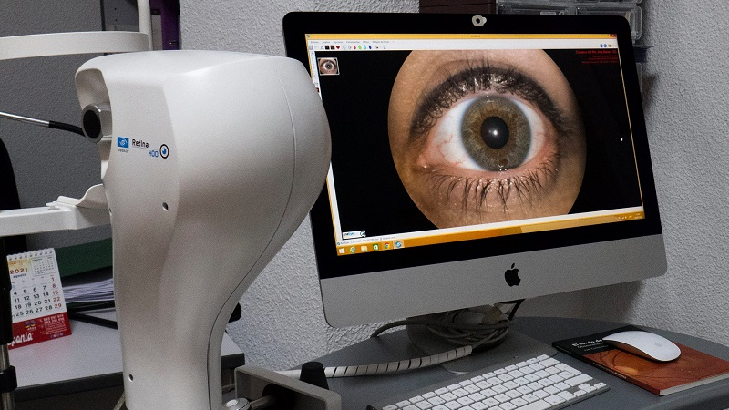
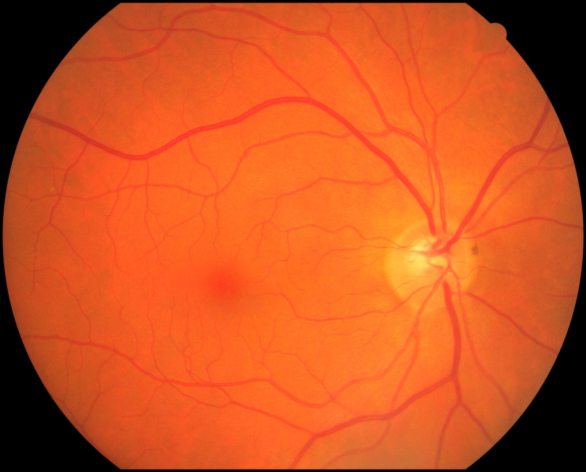

¿Qué es el Glaucoma?
El glaucoma se caracteriza como una condición crónica y progresiva que afecta el nervio óptico, provocando defectos específicos en el campo visual y un deterioro gradual en la estructura del nervio óptico, lo que resulta en la pérdida de fibras nerviosas. El nervio óptico recoge los axones de las células nerviosas de la retina y transmite señales al cerebro para interpretar las imágenes que vemos.
Dentro del ojo, existe un sistema de producción y drenaje continuo del humor acuoso. Este líquido, producido por el cuerpo ciliar, fluye a través de la pupila hacia la cámara anterior, donde se drena a través de la malla trabecular hacia el canal de Schlemm. Cuando hay una resistencia aumentada al flujo, la presión intraocular aumenta. Esta presión elevada puede comprimir el nervio óptico, reduciendo el flujo sanguíneo en sus fibras nerviosas y provocando lesiones progresivas e irreversibles. Con el tiempo, esto conduce a la formación de una excavación en el nervio óptico y al desarrollo del glaucoma.

Causas del Glaucoma
Las investigaciones indican que un aumento en la presión ocular incrementa el riesgo de desarrollar glaucoma. Se cree que cuando la presión intraocular alcanza niveles elevados, puede provocar daños en el nervio óptico y ocasionar pérdida de la visión. Además, diversos estudios sugieren que reducir la presión ocular puede detener la progresión del glaucoma, resaltando así la importancia de controlarla.
Sin embargo, no todas las personas con presión ocular elevada desarrollarán glaucoma, y algunas personas con presión ocular normal pueden padecer esta enfermedad.
El glaucoma puede ser causado por diversos factores, incluyendo:
- Presión intraocular elevada
- Herencia genética
- Enfermedades oculares previas
- Lesiones oculares
Síntomas del Glaucoma
Al inicio, el glaucoma generalmente no presenta síntomas evidentes, lo que conlleva a que aproximadamente la mitad de las personas con esta condición desconozcan que la padecen.
Debido a la naturaleza lenta de este proceso, muchas personas pueden no notar inicialmente los cambios en su visión.
A medida que la enfermedad progresa, es probable que comience a percibir dificultades para ver objetos en los lados. Si no se trata, el glaucoma puede llevar eventualmente a la ceguera.
El glaucoma suele ser asintomático en sus etapas iniciales. Sin embargo, a medida que progresa, pueden aparecer síntomas como:
- Pérdida gradual de la visión periférica
- Visión borrosa
- Dolor de cabeza
- Halos alrededor de las luces
Tratamiento del Glaucoma
El tratamiento más común para el glaucoma son las gotas para los ojos recetadas por un oculista. Estas gotas reducen la presión en el ojo y previenen el daño al nervio óptico. Estas gotas para los ojos no curarán el glaucoma ni revertirán la pérdida de visión, pero pueden evitar que empeore.
Algunos tipos de gotas para los ojos funcionan al ayudar a drenar el líquido del ojo, lo que reduce la presión ocular. El tratamiento del glaucoma tiene como objetivo principal reducir la presión intraocular y evitar la progresión de la enfermedad.
Algunas opciones de tratamiento incluyen:
- Gotas oculares para reducir la presión intraocular
- Medicamentos orales
- Cirugía láser
- Cirugía tradicional de glaucoma
Galeria de Imagenes

 


